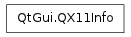

QX11Info¶

Synopsis¶
Functions¶
- def cells ()
- def cloneX11Data (arg__1)
- def colormap ()
- def copyX11Data (arg__1)
- def defaultColormap ()
- def defaultVisual ()
- def depth ()
- def screen ()
- def visual ()
Static functions¶
- def appCells ([screen=-1])
- def appClass ()
- def appColormap ([screen=-1])
- def appDefaultColormap ([screen=-1])
- def appDefaultVisual ([screen=-1])
- def appDepth ([screen=-1])
- def appDpiX ([screen=-1])
- def appDpiY ([screen=-1])
- def appRootWindow ([screen=-1])
- def appScreen ()
- def appTime ()
- def appUserTime ()
- def appVisual ([screen=-1])
- def display ()
- def isCompositingManagerRunning ()
- def setAppDpiX (screen, dpi)
- def setAppDpiY (screen, dpi)
- def setAppTime (time)
- def setAppUserTime (time)
Detailed Description¶
The PySide.QtGui.QX11Info class provides information about the X display configuration.
The class provides two APIs: a set of non-static functions that provide information about a specific widget or pixmap, and a set of static functions that provide the default information for the application.
Warning
This class is only available on X11. For querying per-screen information in a portable way, use PySide.QtGui.QDesktopWidget .
- class PySide.QtGui.QX11Info¶
- class PySide.QtGui.QX11Info(other)
Parameters: other – PySide.QtGui.QX11Info Constructs an empty PySide.QtGui.QX11Info object.
Constructs a copy of other .
- static PySide.QtGui.QX11Info.appCells([screen=-1])¶
Parameters: screen – PySide.QtCore.int Return type: PySide.QtCore.int Returns the number of cells used by the application on the given screen .
The screen argument is an X screen number. Be aware that if the user’s system uses Xinerama (as opposed to traditional X11 multiscreen), there is only one X screen. Use PySide.QtGui.QDesktopWidget to query for information about Xinerama screens.
See also
- static PySide.QtGui.QX11Info.appClass()¶
Return type: str Returns the X11 application class.
See also
- static PySide.QtGui.QX11Info.appColormap([screen=-1])¶
Parameters: screen – PySide.QtCore.int Return type: PySide.QtCore.Qt::HANDLE Returns a handle for the application’s color map on the given screen .
The screen argument is an X screen number. Be aware that if the user’s system uses Xinerama (as opposed to traditional X11 multiscreen), there is only one X screen. Use PySide.QtGui.QDesktopWidget to query for information about Xinerama screens.
- static PySide.QtGui.QX11Info.appDefaultColormap([screen=-1])¶
Parameters: screen – PySide.QtCore.int Return type: PySide.QtCore.bool Returns true if the application has a default color map on the given screen ; otherwise returns false.
The screen argument is an X screen number. Be aware that if the user’s system uses Xinerama (as opposed to traditional X11 multiscreen), there is only one X screen. Use PySide.QtGui.QDesktopWidget to query for information about Xinerama screens.
- static PySide.QtGui.QX11Info.appDefaultVisual([screen=-1])¶
Parameters: screen – PySide.QtCore.int Return type: PySide.QtCore.bool Returns true if the application has a default visual on the given screen ; otherwise returns false.
The screen argument is an X screen number. Be aware that if the user’s system uses Xinerama (as opposed to traditional X11 multiscreen), there is only one X screen. Use PySide.QtGui.QDesktopWidget to query for information about Xinerama screens.
- static PySide.QtGui.QX11Info.appDepth([screen=-1])¶
Parameters: screen – PySide.QtCore.int Return type: PySide.QtCore.int Returns the color depth (bits per pixel) used by the application on the given screen .
The screen argument is an X screen number. Be aware that if the user’s system uses Xinerama (as opposed to traditional X11 multiscreen), there is only one X screen. Use PySide.QtGui.QDesktopWidget to query for information about Xinerama screens.
See also
- static PySide.QtGui.QX11Info.appDpiX([screen=-1])¶
Parameters: screen – PySide.QtCore.int Return type: PySide.QtCore.int Returns the horizontal resolution of the given screen in terms of the number of dots per inch.
The screen argument is an X screen number. Be aware that if the user’s system uses Xinerama (as opposed to traditional X11 multiscreen), there is only one X screen. Use PySide.QtGui.QDesktopWidget to query for information about Xinerama screens.
- static PySide.QtGui.QX11Info.appDpiY([screen=-1])¶
Parameters: screen – PySide.QtCore.int Return type: PySide.QtCore.int Returns the vertical resolution of the given screen in terms of the number of dots per inch.
The screen argument is an X screen number. Be aware that if the user’s system uses Xinerama (as opposed to traditional X11 multiscreen), there is only one X screen. Use PySide.QtGui.QDesktopWidget to query for information about Xinerama screens.
- static PySide.QtGui.QX11Info.appRootWindow([screen=-1])¶
Parameters: screen – PySide.QtCore.int Return type: PySide.QtCore.Qt::HANDLE Returns a handle for the applications root window on the given screen .
The screen argument is an X screen number. Be aware that if the user’s system uses Xinerama (as opposed to traditional X11 multiscreen), there is only one X screen. Use PySide.QtGui.QDesktopWidget to query for information about Xinerama screens.
See also
- static PySide.QtGui.QX11Info.appScreen()¶
Return type: PySide.QtCore.int Returns the number of the screen where the application is being displayed.
- static PySide.QtGui.QX11Info.appTime()¶
Return type: long Returns the X11 time.
- static PySide.QtGui.QX11Info.appUserTime()¶
Return type: long Returns the X11 user time.
- static PySide.QtGui.QX11Info.appVisual([screen=-1])¶
Parameters: screen – PySide.QtCore.int Return type: void Returns the current visual used by the application on the given screen .
The screen argument is an X screen number. Be aware that if the user’s system uses Xinerama (as opposed to traditional X11 multiscreen), there is only one X screen. Use PySide.QtGui.QDesktopWidget to query for information about Xinerama screens.
- PySide.QtGui.QX11Info.cells()¶
Return type: PySide.QtCore.int Returns the number of cells.
See also
- PySide.QtGui.QX11Info.cloneX11Data(arg__1)¶
Parameters: arg__1 – PySide.QtGui.QPaintDevice Makes a deep copy of the X11-specific data of fromDevice , if it is not null. Otherwise this function sets it to null.
- PySide.QtGui.QX11Info.colormap()¶
Return type: PySide.QtCore.Qt::HANDLE Returns a handle for the color map.
- PySide.QtGui.QX11Info.copyX11Data(arg__1)¶
Parameters: arg__1 – PySide.QtGui.QPaintDevice Makes a shallow copy of the X11-specific data of fromDevice , if it is not null. Otherwise this function sets it to null.
- PySide.QtGui.QX11Info.defaultColormap()¶
Return type: PySide.QtCore.bool Returns true if there is a default color map; otherwise returns false.
See also
- PySide.QtGui.QX11Info.defaultVisual()¶
Return type: PySide.QtCore.bool Returns true if there is a default visual; otherwise returns false.
- PySide.QtGui.QX11Info.depth()¶
Return type: PySide.QtCore.int Returns the color depth (bits per pixel) of the X display.
See also
- static PySide.QtGui.QX11Info.display()¶
Return type: long Returns the default display for the application.
See also
- static PySide.QtGui.QX11Info.isCompositingManagerRunning()¶
Return type: PySide.QtCore.bool Returns true if there is a compositing manager running.
- PySide.QtGui.QX11Info.screen()¶
Return type: PySide.QtCore.int Returns the number of the screen currently in use.
The return value is an X screen number. Be aware that if the user’s system uses Xinerama (as opposed to traditional X11 multiscreen), there is only one X screen. Use PySide.QtGui.QDesktopWidget to query for information about Xinerama screens.
See also
- static PySide.QtGui.QX11Info.setAppDpiX(screen, dpi)¶
Parameters: - screen – PySide.QtCore.int
- dpi – PySide.QtCore.int
Sets the horizontal resolution of the given screen to the number of dots per inch specified by xdpi .
The screen argument is an X screen number. Be aware that if the user’s system uses Xinerama (as opposed to traditional X11 multiscreen), there is only one X screen. Use PySide.QtGui.QDesktopWidget to query for information about Xinerama screens.
- static PySide.QtGui.QX11Info.setAppDpiY(screen, dpi)¶
Parameters: - screen – PySide.QtCore.int
- dpi – PySide.QtCore.int
Sets the vertical resolution of the given screen to the number of dots per inch specified by ydpi .
The screen argument is an X screen number. Be aware that if the user’s system uses Xinerama (as opposed to traditional X11 multiscreen), there is only one X screen. Use PySide.QtGui.QDesktopWidget to query for information about Xinerama screens.
- static PySide.QtGui.QX11Info.setAppTime(time)¶
Parameters: time – long Sets the X11 time to the value specified by time .
- static PySide.QtGui.QX11Info.setAppUserTime(time)¶
Parameters: time – long Sets the X11 user time as specified by time .
- PySide.QtGui.QX11Info.visual()¶
Return type: void Returns the current visual.